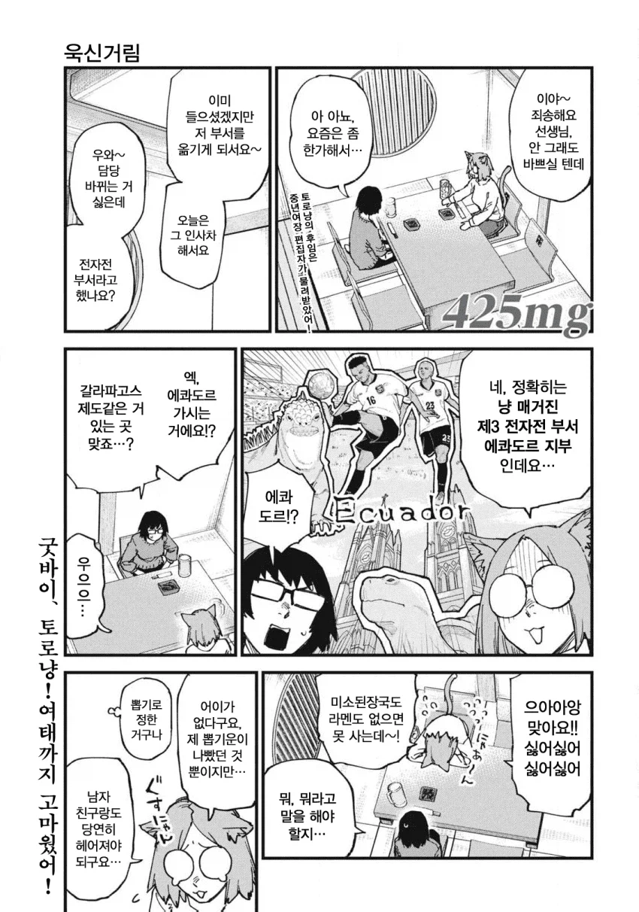
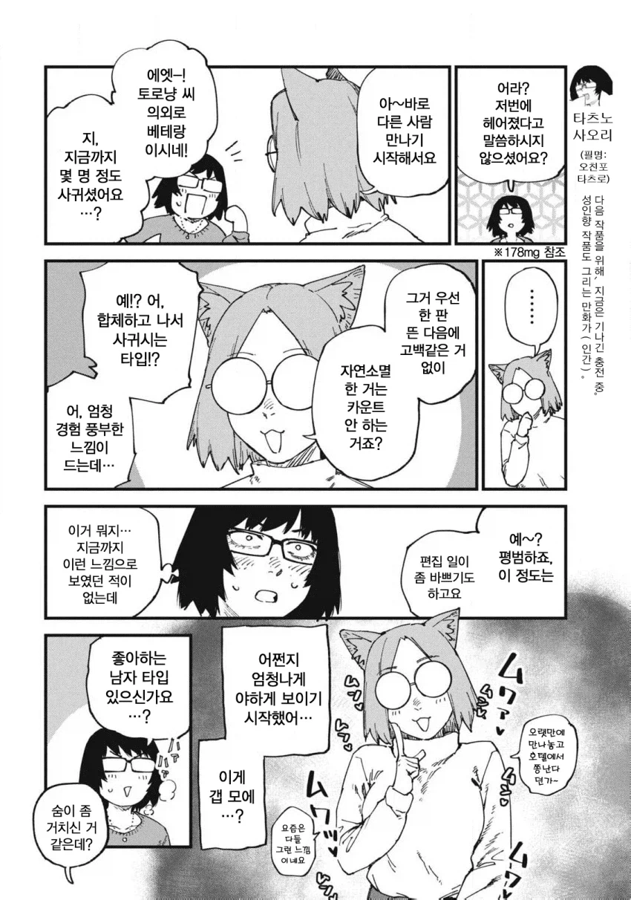
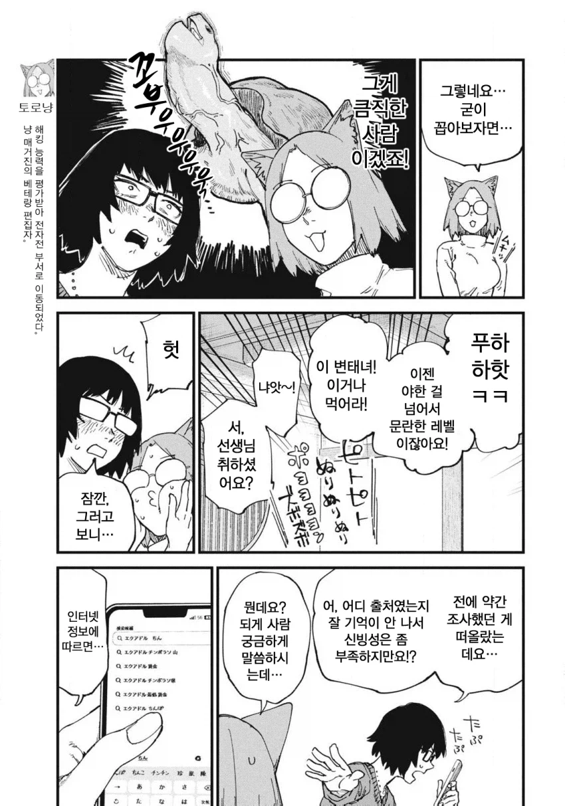
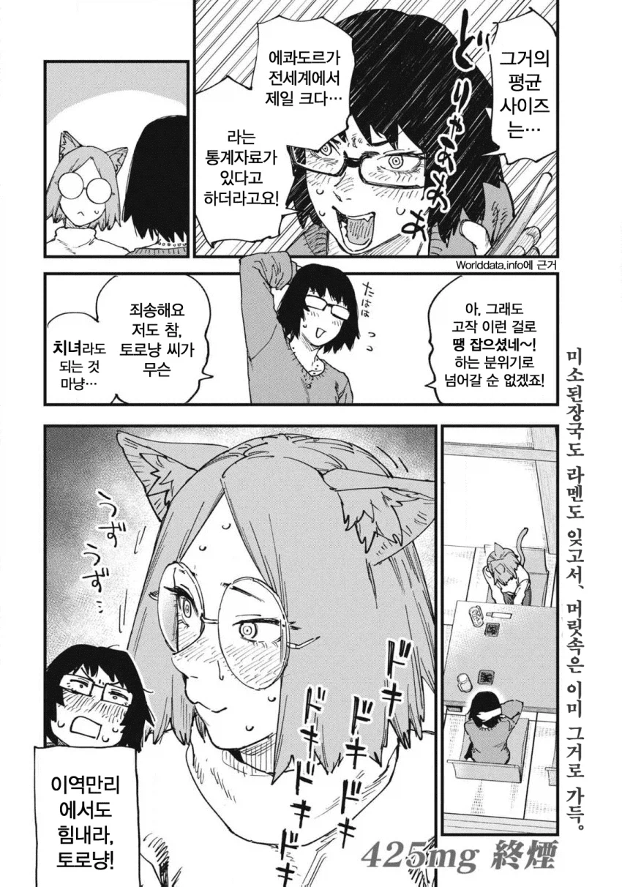

\
나오자마자
없어짐




\
나오자마자
없어짐
주인장이랑 만났으면 저기도 안갔겠네
근데 안경 수인 쟤는 안경을 어디로 걸치는 거임
보통 저러면 묶는 형태던데
기초적인 임플란트다
도대체 수인은 뭘까...
멀리 볼 필요없잖아 ㅋㅋㅋㅋ
저 세계관 수인들이 '유혹과 쾌락에 존나 약하다' 라는 설정이 있는데 의외로 야스중독자 수인같은건 작중에 직접적으로 등장시키진 않았던걸로 기억... 음담패설 유머는 겁나 많던데 직접적으로 드러나는 선은 좀 지키나봄
주인장의개다래쥬지
하긴 담배중독냥이, 알콜중독냥이, 마약중독냥이 다 있는데 섹스중독냥이가 없는게 이상하지.
파친코 중독은 없음?
도박중독은 지속성이 떨어져서 다 주카이숲감
지금 토로냥 야짤 개쏟아지는중

19딱지 안붙이고 만화를 팔기 위한 유일한 수
섹스냥이 등장과 동시에 퇴장시키기
족장 알파네코도 가끔 대학 청강내려가서 원나잇 한사바리 얼큰하게 때리고 오던데
주인장 ㅈㄴ 큰가보네 댓글보니
야추 발기되면 등 긁을수있음
풀발기하면 고추로 네코맨션 한 바퀴 감을 수 있음
시발 존나 이쁘게 생겼네
니케 도로롱콘")
저동네는 안경 수인도 미형이네